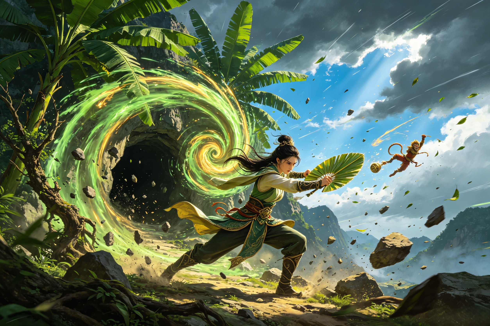

Three Attempts. One Fan. An Iron Will.
The Borrowing of the Banana Leaf Fan is one of the most intricate battle sequences in all of Journey to the West. Not a single duel but a three-part war of deception, transformation, and elemental fury — where Sun Wukong learned that an angry queen with a primordial fan is more dangerous than any celestial army.
Sun Wukong arrives at Plantain Cave with the swagger of the Great Sage Equal to Heaven. He has defeated the armies of heaven. He has survived the Eight Trigrams Furnace. Surely a demon queen — even one married to his sworn brother — will simply hand over the fan when he asks. He is wrong. Princess Iron Fan receives him at the cave entrance. The conversation is ice-cold: she knows who he is. She knows he once tried to kill her son Red Boy before Guanyin intervened. She knows he calls her husband "sworn brother" but has done nothing to help their family. And now he stands before her asking for her most sacred possession as if it were a trivial favor. She refuses. He presses. She produces the Banana Leaf Fan — and swings. A cyclone of green-gold energy erupts from the leaf. Sun Wukong — the Monkey King, the Great Sage, the most dangerous being in the cosmos — is hurled through the air like a leaf in autumn. He tumbles for an entire night, covering 84,000 li before he crashes into a mountain peak in the domain of a minor earth spirit. The spirit finds him dazed, clutching a rock. It is the first time in the entire novel that Sun Wukong has been defeated not through superior combat skill or magical trickery but through sheer, overwhelming elemental force. Princess Iron Fan returns to her cave, closes the door, and resumes her tea. She has made her point: power is not always about fighting. Sometimes it is about being the storm. The encounter echoes the broader tensions between the Bull Demon King's household and the pilgrims — a family whose internal fractures run far deeper than any sword wound. Sun Wukong has met his match in a woman who will not be intimidated, and Zhu Bajie will later joke that the Great Sage was brought low by nothing more than a lady's hand-fan.
Sun Wukong, now in possession of the Wind-Calming Pearl (定风珠, a gift from a sympathetic mountain spirit who had suffered under the Bull Demon King's rule), returns to Plantain Cave. The fan's wind cannot move him. Princess Iron Fan, seeing her primary weapon neutralized, slams the cave entrance and retreats inside. What follows is Wukong's most ethically compromising tactic in the entire novel. He shrinks himself to the size of a mosquito, infiltrates the cave, and waits. When Princess Iron Fan — believing she is alone and safe — prepares her afternoon tea, Wukong hides inside the teacup. She drinks. He enters her stomach. Then, from inside her body, he reverts to his full size and begins to kick, punch, and tear at her internal organs. The pain is unimaginable. Princess Iron Fan screams and writhes on the floor of her own throne room while the Monkey King shouts demands from inside her belly. She agrees to give him the fan. But she is not broken — she is thinking. She hands him not the real Banana Leaf Fan but a counterfeit — a worthless copy that looks identical. Wukong, triumphant, departs with his prize. He will not discover the deception until he tries to use the fake fan on Flaming Mountain and the flames roar higher than ever. Princess Iron Fan, bleeding internally, has outsmarted the smartest being in the cosmos. This episode raises profound moral questions that even Guanyin, the bodhisattva of compassion, does not answer — is torture justified against an enemy who will not negotiate? Tang Sanzang's teachings of mercy ring hollow when it is his own disciple inflicting the violence, and Sha Wujing, the silent witness of many pilgrims' compromises, can only watch in troubled silence.
Sun Wukong now knows the fan's secret: it must be given willingly to function properly. So he devises a deception more psychologically devastating than any physical attack. He transforms into the exact likeness of the Bull Demon King — her estranged husband — and arrives at Plantain Cave. Princess Iron Fan, who has not seen her husband in years, who has been alone with her pain and her pride and her gradually breaking heart, opens the door. She sees the Bull Demon King. She embraces him. The text is heartbreakingly brief about this moment, but it is unmistakable: she is a wife who still loves her husband, who still hopes. The false Bull Demon King apologizes for his absence. He is gentle. He asks about the fan — oh, by the way, where is it? And Princess Iron Fan, in the warmth of what she believes is her marriage restored, gives him the real Banana Leaf Fan and teaches him the incantation to shrink it. When Wukong drops the disguise and reveals himself, laughing, the emotional devastation is absolute. She has been tricked into giving her enemy her most precious possession by impersonating the man who abandoned her. In the subsequent confrontation, her rage is not the cold fury of a queen defending her domain — it is the white-hot wrath of a woman who has been violated at every level. The real Bull Demon King, when he learns of the deception, is furious — not on his wife's behalf, but because Wukong impersonated HIM. He joins the battle not out of love for his wife but out of wounded pride. The full-scale war that follows draws in Nezha, who arrives with the celestial army to subdue the Bull Demon King, and Erlang Shen, whose own shapeshifting battle with Sun Wukong remains the only comparable transformation duel in the entire novel. The Jade Emperor's heavenly forces are deployed to what began as a domestic tragedy — a woman defending her last treasure from a monkey who has already taken everything else she had.
The climax of the battle: the Bull Demon King is subdued by Nezha's samadhi fire and the celestial forces. Princess Iron Fan, seeing her husband in chains — for all his betrayals, he is still her husband, still the father of her son — makes the ultimate choice. She voluntarily surrenders the Banana Leaf Fan to Sun Wukong, on the condition that the pilgrims extinguish Flaming Mountain, use the fan for its legitimate purpose, and return it. It is the only deal she can make, and she makes it with the last shred of her negotiating power. Sun Wukong, for once, keeps his word. He extinguishes the eternal fire (waving the fan 49 times — a number of cosmic significance), the pilgrims cross safely, and the fan is returned to its rightful owner. The fire never rekindles. Princess Iron Fan is left with: her fan (restored), her domain (now habitable for the first time), her husband (captured by heaven, his fate uncertain), and her son (still serving Guanyin in the Southern Sea). She is not defeated. She is changed — from a queen defending a fortress of fire to a steward overseeing a land where things can now grow. Some traditions say she used the fan thereafter to bring gentle rains to the newly fertile region, becoming a figure of blessing rather than isolation. The iron of her name was never about cruelty. It was about what does not break. Tang Sanzang's pilgrimage advanced because a demon queen chose grace over destruction. The Bull Demon King's fate after capture remains one of the novel's unresolved threads — did heaven imprison him or eventually release him to his wife? Guanyin now raises the son Princess Iron Fan once held in her arms — a cosmic custody battle whose outcome was decided not by a mother's love but by the bodhisattva's claim on a troubled child's soul.
The classic CCTV adaptation of the three borrowings, featuring the definitive screen portrayal of Princess Iron Fan. The 1986 series, beloved across generations of Chinese viewers for its faithful adaptation and unforgettable performances, captures every phase of the confrontation — from the initial cyclone that sends the Monkey King tumbling across the horizon to the devastating false-husband deception. This episode is widely regarded as one of the series' finest, balancing comedy, action, and genuine pathos in the queen's final surrender.
Search YouTube for "Journey to the West 1986 Banana Leaf Fan" or "西游记 三借芭蕉扇"The critically acclaimed action RPG from Game Science features Flaming Mountain as a major location, and Princess Iron Fan's legacy shapes the region's lore. Players encounter a world shaped by the aftermath of the three borrowings — a landscape where the Banana Leaf Fan's power is still felt, where the echoes of the Bull Demon King's defeat linger, and where the iron queen's story lives on in environmental storytelling and NPC dialogues. The game's reimagining of the Journey to the West mythos gives Princess Iron Fan's character new depth for a global audience.
Available on Steam, PlayStation 5, and Xbox Series X|SThree times. First: direct request — she blew him 84,000 li away. Second: he invaded her stomach — she gave him a fake fan. Third: he impersonated her husband — she gave him the real fan, believing she was reconciling with the Bull Demon King. Each attempt escalated the moral complexity of the conflict.
Because Sun Wukong had previously tried to kill her son Red Boy before Guanyin intervened. Because his "borrowing" was a demand backed by implied violence. Because the fan was her most precious possession and the source of her power. Her refusal was not villainy — it was the response of a mother and a queen to someone who had wronged her family.
Yes. After extinguishing Flaming Mountain with 49 waves of the fan, he returned it to Princess Iron Fan. This is one of the few instances in the novel where a powerful artifact is genuinely borrowed and returned, and it represents a rare moment of the pilgrims respecting a demon's property rights.
Dive Deeper